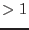
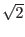

Sources found in the local detection step (task eboxdetect)
at significance levels (column SIGMA of eboxdetect source list) exceeding
a user-specifiable threshold (input parameter mlmin) in the
respective energy band are removed
from the image using a suitable PSF and source brightness
dependent cut-out radius (determined to be the radius at which each
source contributes more than a user-specifiable number of
counts/arcsec to the background; parameter scut;
default value: 0.01). The resulting image can optionally be output for diagnostic purposes.
After the removal of the sources the image is rebinned to a grid
of the dimension nsplinenodes
to the background; parameter scut;
default value: 0.01). The resulting image can optionally be output for diagnostic purposes.
After the removal of the sources the image is rebinned to a grid
of the dimension nsplinenodes  nsplinenodes.
nsplinenodes.
Division of the image by the exposure image removes gradients due to spatial
variations of the exposure from the image
which otherwise would not be well represented by the spline fit.
A two dimensional spline fit of the rebinned and exposure corrected
image is performed.
The number of spline nodes (default value: 16) is user-selectable.
Finally, the resulting spline image is again multiplied by the exposure
images.
If the parameter nfitrun is set to values , remaining excesses
of the input image over the result of spline fit can be removed iteratively:
if pixels of the rebinned image deviate from the spline fit by more
than a specifiable number of sigmas (default value: 4 sigmas)
the excesses are removed by setting their statistical weights to zero and the
spline fit is repeated (maximum number of iterations may be specified).
The number of removed bins and the reduced chi values are displayed
when using verbosity level 5 or higher. Note that removal of a large number
of contiguous bins will lead to areas where the spline fit is unconstrained.
values are displayed
when using verbosity level 5 or higher. Note that removal of a large number
of contiguous bins will lead to areas where the spline fit is unconstrained.
The reduced chi and
corresponding number of degrees of freedom of the
background map with respect to the input image is stored
in the keywords CHISQR and NDOF of the output background map.
and
corresponding number of degrees of freedom of the
background map with respect to the input image is stored
in the keywords CHISQR and NDOF of the output background map.
From version 3.0 esplinemap is able to determine the background caused by out-of-time events registered during the readout process of the PN CCDs. If the flag withootset is set, the photon event table specified in ooteventset is read and the background caused by OOT events is included in the output background map. As input table esplinemap can use either a normal photon event data-set or a photon events table created with epevents with flag withoutoftime set. Note that in both cases a photon event set has to be filtered with the same temporal and flag selections as the image used as input to esplinemap. The parameters pimin and pimax are used to specify the energy range of the input image and to select those photons from the input event list that fall into this energy range. If the input event table contains only photons within the energy range of the input image, the parameters can be left at their default values pimin=1 and pimax=30000.
With version 4.0 an alternative method to fit the background of an image has been implemented: If the option fitmethod=model is set, a 2-component model for the detector (particle) and the cosmic X-ray backgrounds is fit to the masked and binned input image. This model consist of a linear combination of the vignetted exposure map and the unvignetted exposure mask of the input image. The exposure maps are specified by the user via the parameters expimageset and expimageset2. An example call of eexpmap and esplinemap is given here:
eexpmap imageset=image.fits eventset=events.fits attitudeset=attitude.fits \
withvignetting=yes expimageset=expmap1.fits pimin=500 pimax=2000
eexpmap imageset=image.fits eventset=events.fits attitudeset=attitude.fits \
withvignetting=no expimageset=expmap2.fits pimin=500 pimax=2000
esplinemap imageset=image.fits boxlistset=eboxlist.fits withexpimage=yes \
bkgimageset=bkg_model.fits \
withexpimage2=yes expimageset=expmap1.fits expimageset2=expmap2.fits \
pimin=500 pimax=2000 \
fitmethod=model
If only one exposure map is provided, it is assumed to be a vignetted exposure map and a flat image is used as the second model component. All other parameters of esplinemap can be used as in the case of fitmethod=spline.
A third fitmethod has been introduced with version 5.0. fitmethod=smooth invokes an adaptive smoothing of the cheesed background image. It is convolved with an Gaussian kernel whose width is increased by factors of  in eight consecutive steps. For each image position, the layer with the best signal-to-noise ratio is chosen out of the eight smoothed image layers. Neighboured layers are interpolated to achieve the final smoothed background map. The adaptive smoothing is particularly useful if the background is varying strongly over the field of view and set as default in edetect_stack.